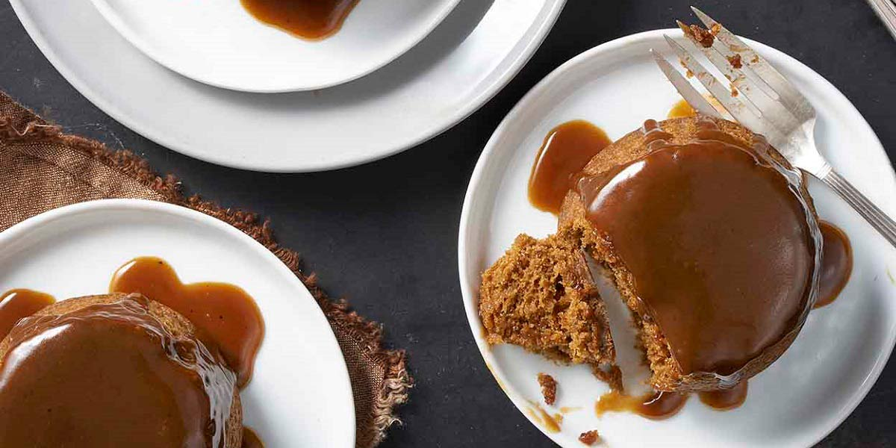

Sticky Toffee Pudding
Recipe Specification
Ingredients List
| Ingredients | Quantity |
|---|---|
| Dry Dates | 230g |
| Vanilla Essence | 1 tsp |
| Self-raising Flour | ½ tsp |
| Bicarbonate of Soda | 1 tsp |
| Medium Eggs | 2x1 |
| Unsalted Butter | 140g |
| Demerara Sugar | 140g |
| Black Treacle | 40g |
| Whole Milk | 100ml |
| Muscovado Sugar | 175g |
| Double Cream | 230ml |
| Golden Syrup | 15g |
Yield: 8-10 portions
Preparation
- Leave butter outside of fridge so that it acclimatises to room temperature.
- Remove stones from dates and coarsely chop. Pour 175ml of boiling water over them, along with vanilla essence and leave for 30 minutes.
- Apply an even layer butter to 7 moulds and lightly flour each one.
- Cream 90g of butter with demerara sugar in a bowl until pale and light in complexion.
- Using an electric whisk, combined the eggs with the butter and sugar, one egg at a time.
- Sift flour and bicarbonate of soda in a separate bowl.
- Fold in 1/3 of the flour and half the milk into the egg, butter and sugar mixture. Do this gently and be sure not to over beat. Gradualy add the remaining flour and milk.
- Gently mix in soaked dates and evenly distribute batter between 7 moulds. Place mould on a baking tray.
- Pre-heat oven to 160’C.
Cooking Instructions
- Place baking tray on the middle shelf of oven and cook for 20-25 minutes until pudding has risen and is springy to touch.
- Whilst pudding is cooking, Add 50g of butter, the muscovado sugar and half the double cream to a sauce pan before placing over a medium heat. Bring to the boil whilst stirring regularly and once all the sugar has dissolved, add the golden syrup. Let the mixture cook for 2-3 minutes before removing from the heat and adding the remaining double cream.
- Remove puddings from oven and leave in the moulds for 2-3 minutes. Use a pallet knife to separate the pudding from the mould and turn out the mould. Add toffee sauce to the top of pudding and serve.

Serving Suggestions
Serve with custard or ice cream.
Storing instructions
Allow to cool to room temperature before covering with clingfilm and placing in the fridge. Consume with 4 days of making.
Reheating Instructions
Place in the microwave for 1-2 minutes.